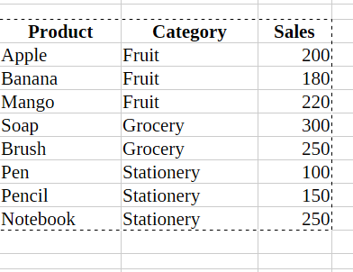

LibreOffice Calc Practicals
Master spreadsheet skills with these comprehensive practical exercises
Practical 1: Data Consolidation
Objective: Combine data from two sheets into one summary sheet by items.
Step 1: Prepare the Data
- Create a new sheet named Jan:
- Click the + icon at the bottom sheet tab
- Right-click the new sheet and rename to "Jan"
- Enter sales data with columns: Items, Quantity, Amount
- Create another sheet named Feb with similar data
Step 2: Create a Consolidated Sheet
- Insert a new sheet and rename it Consolidated
- Click in cell A1 (where combined data will appear)
Step 3: Open the Consolidate Dialog
- Go to menu:
- The Consolidate dialog box will open
Step 4: Add Source Ranges
- Click inside the Source data range box
- Go to the Jan sheet → select the data range (e.g., B8:D11)
- Click Add button
- Go to the Feb sheet → select data range (e.g., B5:D8)
- Click Add again
Step 5: Configure Settings
- Under Function, select Sum
- Verify "Copy results to" points to Consolidated sheet

- Click OK
Calc will automatically combine data from both sheets, match items by name, and sum quantities/amounts!
Practical 2: Macro Function
Objective: Record and run a simple macro that performs formatting automatically.
Step 1: Open and Save Spreadsheet
- Open LibreOffice Calc
- Save as Macro_Function.ods
- Enter sample data in the sheet
Step 2: Enable Macro Recording
- Go to
- Check "Enable macro recording (limited)"
- Click OK and restart LibreOffice Calc
This step is crucial! Macro recording must be enabled first.
Step 3: Record the Macro
- Select
- A small floating recorder window will appear
- Perform formatting actions:
- Select cells A1:B1
- Make them Bold
- Apply background color
- Center align the text
- Click Stop Recording
Step 4: Save the Macro
- In the dialog, choose settings and click Save
Step 5: Run the Macro
- Go to
- Navigate to your macro and click Run
Your header formatting is applied automatically!
Practical 3: Multiple Operations (Student Grading)
Objective: Create a complete student grading system with marks, totals, percentages, grades, and ranks.
Grading Scale
- ≥75% → A1
- 60-74.99% → A2
- 45-59.99% → B1
- 33-44.99% → B2
- <33% → Fail
Formula 1: Total Marks (Column G)
In cell G2:
=SUM(B2:F2)
Drag down through G11:
Formula 2: Percentage (Column H)
In cell H2:
=ROUND(G2/500*100,2)
Formula 3: Grade (Column I)
In cell I2 (nested IF):
=IF(H2>=75,"A1",IF(H2>=60,"A2",IF(H2>=45,"B1",IF(H2>=33,"B2","Fail"))))
Formula 4: Rank (Column J)
In cell J2:
=RANK(G2,$G$2:$G$11,0)
For LibreOffice use RANK; for Excel use RANK.EQ
Formula 5: Remark (Column K)
In cell K2 (to flag if any subject < 33):
=IF(OR(B2<33,C2<33,D2<33,E2<33,F2<33),"Needs Attention","OK")
Complete grading system with automatic calculations!
Practical 4: Create Subtotals
Objective: Sort sales data by category and use Subtotal feature for category-wise totals.
Step 1: Enter Sales Data
Step 2: Sort the Data
- Select your data range
- Go to

- Choose Category as Sort Key and click OK

Sorting by grouping column is REQUIRED before applying subtotals

Step 3: Apply Subtotals
- Select the data range again

- Go to
- Configure: Group by Category
- Calculate subtotals for Sales, function Sum
- Click OK
Calc inserts subtotal rows for each category plus Grand Total!
Practical 5: Scenario Analysis
Objective: Use Scenarios to compare Total Profit under different price assumptions.
Problem Setup
Compare three scenarios for product profit:
- Normal Case: Current CP and SP
- Best Case: SP +10%, CP -5%
- Worst Case: SP -10%, CP +5%
Step 1: Setup Data and Formulas
Create table with Product, CP, SP, Quantity, Profit
Profit formula in E2:
=(C2-B2)*D2
Fill down to E4:
Total Profit in E5:
=SUM(E2:E4)
Step 2: Create Normal Case Scenario
- Select range B2:C4 (CP and SP cells that will change)
- Go to
- Click Add
- Name: Normal Case
- Description: Base data
- Click OK to save current values
Step 3: Create Best Case Scenario
- Click Add again in the Scenarios dialog
- Name: Best Case
- Enter the Best Case values:
- Pen: CP = 4.75 (5 × 0.95), SP = 11 (10 × 1.10)
- Notebook: CP = 28.5 (30 × 0.95), SP = 55 (50 × 1.10)
- Eraser: CP = 1.9 (2 × 0.95), SP = 4.4 (4 × 1.10)
- Click OK
Step 4: Create Worst Case Scenario
- Click Add once more
- Name: Worst Case
- Enter the Worst Case values:
- Pen: CP = 5.25 (5 × 1.05), SP = 9 (10 × 0.90)
- Notebook: CP = 31.5 (30 × 1.05), SP = 45 (50 × 0.90)
- Eraser: CP = 2.1 (2 × 1.05), SP = 3.6 (4 × 0.90)
- Click OK
Step 5: Switch Between Scenarios
- To apply a scenario, simply double-click its name in the Scenarios dialog
- Watch how the Total Profit in cell E5 changes:
- Normal Case: Original profit values
- Best Case: Higher profit (lower costs, higher prices)
- Worst Case: Lower profit (higher costs, lower prices)
You can easily compare different business scenarios by switching between them with a double-click!
Successfully created scenario analysis to compare profit outcomes under different pricing assumptions!
üì• Download Complete Practical Manual
Get the full document with all screenshots and detailed instructions
Download DOCX File